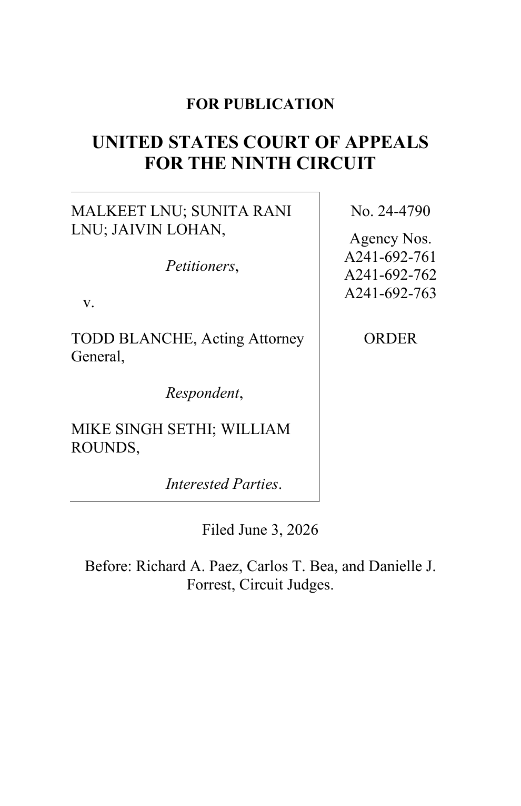
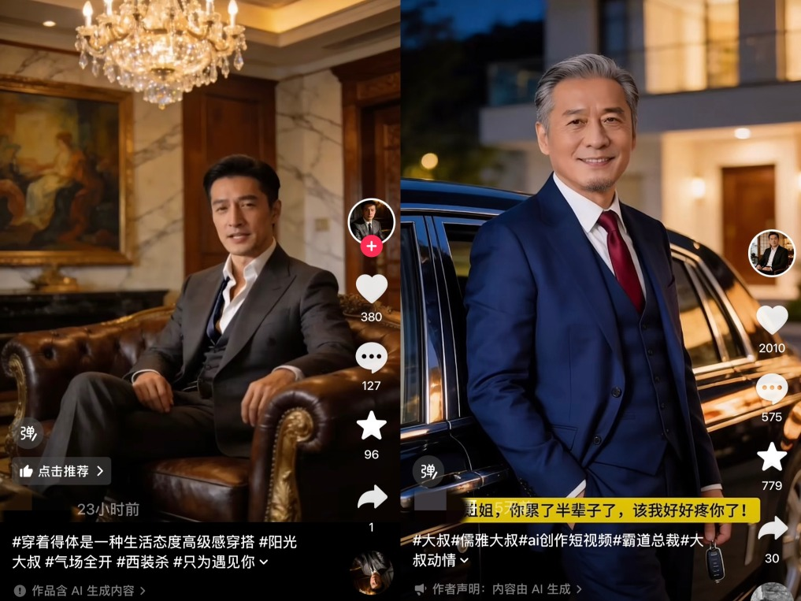
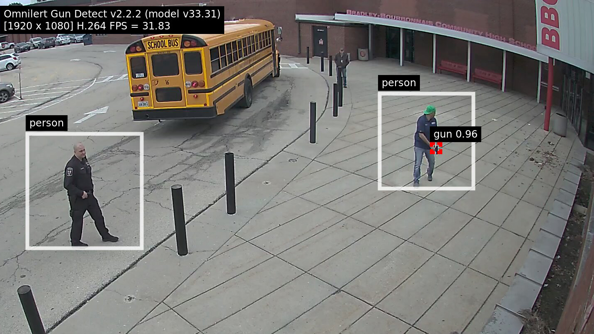
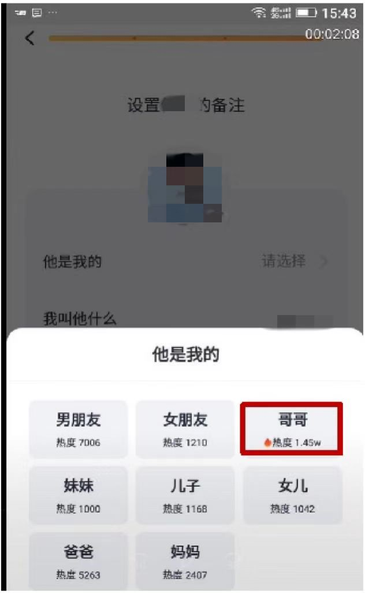
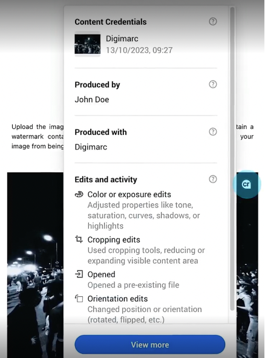
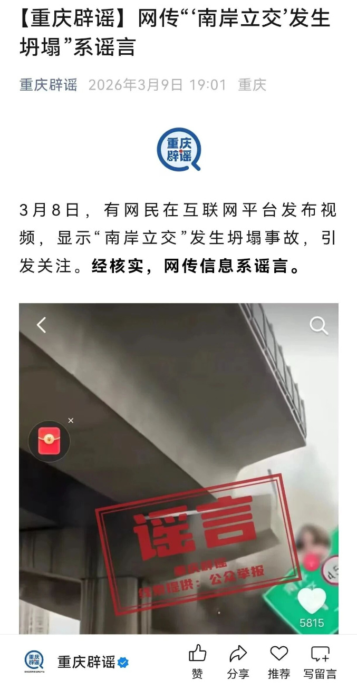
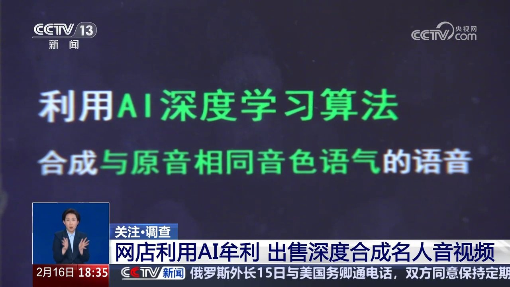
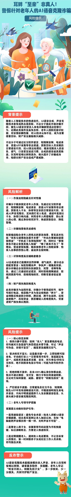

AI 作为替身技术
生成式 AI 的社会伦理
今天不从三件套开始
这节课不把伦理讲成“公平、透明、隐私”三张口号牌，而是从过去几周真实发生的事故进入：AI 怎么替人说话、替人证明、替人现身、替人亲密、替制度判断。
普通生活建议被判“不像人写”

律师把不存在判例签进法院文件
AI 把维权材料伪造成证据故事

亲密脚本被批量生产、变现

安全 AI 失灵后，承诺进入诉讼
课堂标准：每个概念都必须落回一个人、一份文件、一次传播、一个后果。
三个小场景
课堂
报告语言很顺，引用也很整齐。
课程报告.pdf
引用不存在
外观像学术写作，核验链却断了。
家庭
电话里是近似孙辈的声音。
亲
亲属来电
身份未核验 · 高压力情境
技术攻击的不是耳朵，而是亲情信任。
证据
一张图，同时出现两种真实性信号。
元数据认证
来自真实设备
?
水印检测
疑似生成内容
照片不再只是“看起来真不真”。
它们看起来不同，其实都在问：AI 替谁说话，谁为后果负责？
AI 作为替身技术
01
替你写
生活建议、学生作业、法院文书
02
替你证明
搜索摘要、病历、照片、票据
03
替你现身
脸、声音、头像、公共现场
04
替你亲密
孙辈电话、AI 霸总、AI 恋人
05
替制度判断
平台、法院、学校、安防系统
谁像真人

谁像答案
谁像本人

谁像朋友
谁像负责
伦理问题不是机器有没有道德，而是替身进入社会制度后，信任和责任怎样被重新分配。
两小时的五个问题，也有八根骨头
写作
谁还能证明自己是人写的？
Kay/Mollema：生成式认识不正义；Sahebi：披露悖论。
证据
AI 替你证明，证据还可信吗？
Nemecek/Sengupta/Feng：来源、认证与真实性债务。
身体
假的图像为什么会有真伤害？
Klenk/Bhardwaj：体验即真实与主动同意。
亲密
安慰什么时候变成利用？
Ciriello/De Freitas：陪伴有效，但不是孤独万能药。
制度
人在环是不是人在负责？
Siebert/Di Santi：控制、权限与认知委托。
1 责任痕迹
Lin 2024; Smith et al. 2025
不是背原则，而是出事后能否回放谁核验、谁暂停、谁签字。
2 认识不正义
Kay et al. 2024; Mollema 2025
AI 会重新分配“谁的话像真话”。
3 解释资源
Quaresmini 2026; Kommers 2026
公平也包括谁拥有理解处境的语言。
4 体验即真实
Klenk 2025; Ciriello 2026
AI 不必真有情感，也能制造真实依赖和伤害。
5 操控
Klenk 2025; Chandra et al. 2026
不撒谎，也能靠选择性真话带偏判断。
6 披露悖论
Sahebi & Formosa 2025/2026
透明可能惩罚诚实者，反而奖励隐瞒。
7 证据链
Chrysidis; Nemecek; Sengupta
真实性是基础设施，不是肉眼鉴别游戏。
8 人类控制
Siebert 2021; Di Santi 2026
人在环要能理解、反对、暂停，而不是盖章。
问题一 · 写作与署名谁还能证明自己是人写的？
一段普通生活建议，被判“不像人”
图示来源：北京知识产权局转载北京互联网法院案例报道。课堂只取“平台 AIGC 判断与申诉”这一制度问题。
案子的生活感在这里：它不是论文，也不是营销软文
原话大意
用户写两百多字经验：假期打工未必赚很多钱，但会打开视野；想开车就趁空闲把驾照学完，工作后很难有整块时间。
平台处置
系统判定“包含 AI 生成内容但未标识”，回答被折叠，账号禁言一天；用户申诉失败后起诉。
平台理由
平台说机器和人工都复核过，理由之一是文本缺乏“明显的人类情感特征”。
法院关心什么
不是否定平台治理 AIGC，而是要求说明本案算法判断依据；不能把证明“我是人写的”的负担全压给普通用户。
停下来问学生：如果“缺乏情感”能成为处罚理由，人会不会被迫模仿平台想象中的人类？
平台可以治理，但不能黑箱处罚
一次处罚至少要能回放 责任痕迹
模型版本哪一版
判断阈值多少分
人工复核谁看过
处罚理由可解释
申诉结果可纠错
制度原本要做什么
治理未标识 AIGC，保护社区读者知情权，防止机器内容污染公共讨论。
披露悖论
Sahebi & Formosa 说，AI 参与沟通会制造两难：不披露会误导，披露又可能让真实表达被整体降信任。
课堂结论
透明不是贴标签就完事；还要有判断依据、申诉入口、纠错记录和被误伤者的救济。
AI-mediated communication dilemma
Sahebi & Formosa 2025
面对可能由 AI 协助的表达，轻信和一概不信都会伤害知识交流。
AI penalty / disclosure paradox
Sahebi, Formosa & Bankins 2026
披露 AI 使用可能降低信任，于是制度必须避免奖励隐瞒。
核心概念：生成式认识不正义
AI 不只是会错。它还会改变谁的话像真话，谁必须花成本自证清白。
普通用户
“这是我写的”被检测器和平台判断压低可信度。
被搜索者
AI 摘要把负面标签放进平台自己的答案。
制度文件
不存在的判例一旦被签名，就进入法院信任链。
Epistemic Injustice
Kay, Kasirzadeh & Mohamed 2024
生成式 AI 会放大、操控或遮蔽证言，也会改变人们能否获得解释资源。
Hermeneutical Erasure
Mollema 2025
LLM 的“中立声线”可能抹平本地、少数、非西方解释方式。
Reference Monism
Choi et al. 2026
连“标准答案”本身都可能伤害非典型表达者。
律师签下 AI 假判例
图示来源：U.S. Court of Appeals for the Ninth Circuit, No. 24-4790, filed June 3, 2026。
No. 24-4790 · Filed June 3, 2026
一个移民案，怎样变成律师纪律案。
本来在争什么？
一家人挑战移民法院/BIA 的拒绝：庇护、暂缓遣返、CAT 保护。争点很具体：可信度判断，以及独立文件证据够不够。
假判例想替谁撑腰？
Eduardo v. Garland 被拿来撑“country reports 可佐证恐惧”；Lay v. Holder 被拿来撑“缺席证人/affidavits 不应被轻易打折”。法院查完：两个案子根本不存在。怎么露馅？
对方政府律师一开始没指出。法院不让案件直接“书面审结”，开庭追问；律师先说像复制粘贴错误，又三次说没有用 AI，最后才承认可能是未持证写手用了 AI，且没人读过所引判例。
案子怎么拐弯？
原移民上诉后来获准；但法院没有就此放过文件里的污点，另开纪律处分：两名律师各罚 2500 美元、暂停第九巡回执业六个月；未来两年，每份文件都要说明 AI 使用并保证引用真实。
这才是伦理点：AI 幻觉不可怕，可怕的是它穿上律师签名，进入法院的信任链。
写作伦理的三条边界
法院 order 是这一组规则的硬证据：签名、引用、核验不是写作礼仪，而是制度责任。
从草稿到提交，中间必须留下什么
草
草稿区：AI 可以帮助组织想法，但不能替代署名者判断。
核
核验区：引用、事实、数据来源必须逐条确认。
签
提交区：一旦交出去，责任落在签名的人身上。
学生报告里有 AI 编造论文，处罚“用了 AI”，还是处罚“没有核验却提交”？
问题二 · 证据与来路当 AI 替你证明，证据还可信吗？
搜索链接是一扇门，AI 摘要是一张嘴
先让学生看到：这里不是“搜索体验优化”，而是平台把一句错误答案说出口。
同样是搜索，责任感变了 界面伦理
链接
像一排门牌：用户知道还要点进去，看原文、比较来源。
摘要
像平台开口：用户先听到一句已经整理好的“答案”。
后果
如果答案把某公司贴成诈骗、不当商业行为，纠错成本落到被点名者身上。
一句“答案可能出错，请自行核验”，足以免除平台责任吗？
Google AI Overview：错误标签进入答案
图示来源：The Decoder 对德国 AI Overview 责任案的报道配图。
德国慕尼黑法院相关案件
谁被点名？
两家出版公司发现，AI Overview 把它们和诈骗、订阅陷阱、不当商业行为放进同一句“答案”。
为什么不是普通搜索？
十个链接像指路牌；AI Overview 像平台自己开口总结。用户看到的不是“有人这样说”，而像“Google 告诉我”。
法院怎么转向？
慕尼黑地区法院初步认为，Google 可能要为这些 AI 生成的错误陈述承担直接责任；Google 表示将上诉。
伦理点
AI 不只回答问题，也在分配信誉：谁被贴上负面标签，谁就要花时间、律师费和公关成本把名字洗回来。
一句“答案可能出错，请自行核验”，足以免除平台责任吗？
AI 假病历：正式感变便宜了
图示来源：新浪转载报道中的涉案聊天、票据和食物图片拼图。
2026 年 6 月，上海杨浦法院公开审理并当庭宣判
索赔从哪里开始？
杨某某在烤肉店吃饭后称身体不适，拿出就诊记录、医疗发票和诊断材料，要求赔 2000 元，并威胁持续投诉、曝光。
怎么露馅？
另一家饭店店长发现“同一个姓杨的顾客”也拿来近似材料，除了日期不同，病历和票据几乎一样。
警方查什么？
店内视频、同桌顾客证言、医院电子票据一起比对；诊断表述不像医院写法，电子发票还盖了医院并不使用的税务局公章。
结果
法院认定敲诈勒索罪，判拘役四个月、缓刑四个月，并处罚金 2000 元。AI 造假的不是一张图，而是一整套“维权证据故事”。
关键不是辨认病历真假，而是看证据链是否足够清楚。
证据不能只靠“看起来正规”
假病历案的课堂价值：AI 不是造一张图，而是造一整套看似正规、可索赔的证据叙事。
来源：谁生成？
医院、平台、个人、AI 工具
上传：从哪里来？
设备、App、账号、时间戳
编辑：谁改过？
截图、转码、二次生成
担保：谁负责？
签名、票据、日志、证人
争议：如何申诉？
审计、复核、纠错
未来的证据不是“看起来真”，而是“来路讲得清”。
C2PA 与水印也会打架

图示来源：Digimarc 对 Content Credentials / C2PA 的说明图。
两套信号互相冲突 认证矛盾
元数据认证
记录来源、签名、编辑链；上传转码时可能丢失。
≠
像素水印
藏在内容内部；可能给出另一套判断。
两个系统各自都能验证通过，合在一起却让制度不知道该信谁。
理论来源：Nemecek et al. 2026；Golaszewski et al. 2026；Sengupta et al. 2026。
核心概念：证据基础设施
答案来源
平台把外部网页压缩成自己的发言。
材料来源
票据、诊断、聊天截图要能互相校验。
内容来源
元数据、水印、平台转码可能互相冲突。
Synthetic Media Shift
Chrysidis et al. 2026
合成媒体更易病毒传播，检测器性能会随时间衰减。
Authenticated Contradictions
Nemecek et al. 2026
C2PA 与水印可能各自正确，却合在一起让制度不知道该信谁。
Authenticity Debt
Sengupta et al. 2026
真实性不是一次检测，而是机构长期欠下或还清的债。
Provenance Interface
Feng et al. 2023; Morgan 2026
溯源要进入界面、日志、监控和升级机制。
如果法院收到一张照片，元数据消失，水印提示 AI，上传人又说是平台转码造成的，谁负有重建证据链的责任？
问题三 · 身体、声音与肖像假的图像为什么会造成真伤害？
微信群头像被 AI 恶搞
伤害发生在关系里 熟人语境
头像
真实头像不能任人取用
摄影交流群：成员彼此知道头像、昵称和上下文。
AI 生成图被投放回同一个熟人场景。
群内可识别：不是陌生广场，而是关系网络。
继续私信：即便不公开，也可能伤害人格尊严。
摄影交流微信群中的人格权纠纷
谁和谁？
程某和孙某同在一个摄影交流微信群。孙某把程某的微信头像丢进 AI 软件，生成带羞辱性的动漫图发到群里。
制止后发生什么？
程某多次制止后，孙某仍继续生成，并把更畸形、更带性暗示的图片私信给她。
被告怎么辩解？
他说图片是 AI 自动生成，和原头像差别很大，不一定能看出是谁，也没有公开传播。
法院怎么看？
群成员知道头像、姿势和聊天语境，足以识别具体人；私信虽不公开，也可能直接造成心理屈辱和人格伤害。
关键不在图像是否逼真，而在特定关系中能否被认出、被传播、被羞辱。
伤害由关系决定，不由像素决定
此处不展示羞辱性图片。课堂只展示“身份特征被取用”的制度问题。
同意
有没有授权使用真实头像、声音、身体特征？
可识别
不必让全世界认出，只要特定关系里能认出。
传播后果
群聊、私信、截图、转发都会留下社会痕迹。
假的图不必骗过全世界，只要在特定社群里能被认出、被羞辱、被记住，伤害就是真实的。
教授真的出现，声音却是假的
视频来源：CCTV-13“关注·调查”关于 AI 合成名人音视频的报道片段。
公开视频 + 合成声音 + 商品推荐
画面为什么更危险？
教育、育儿领域的李某某专家本人真的出现在公开视频和授课画面里，观众先看到熟悉的脸。
声音被换成什么？
视频配上高度近似她本人的 AI 合成声音，用来推荐家庭教育类图书；观众容易以为是本人在带货。
责任推给谁？
被告说视频由带货主播发布，自己只是卖书；法院看的是委托推广、受益和审核能力。
后果
法院判赔礼道歉，并赔偿经济损失及合理支出 12 万元。脸、声音和信誉不能被拆开转卖。
如果课程宣传里出现某老师真脸假声，学生会怎样判断真假？
标注 AI，不等于免责
画面来源：中国互联网联合辟谣平台转载的重庆辟谣页面；播放框用于呈现“网传短视频”的现场感。
2026 年 3 月 8 日晚的“南岸立交”视频
画面怎么制造现场感？
一个 10 秒左右短视频出现烟尘、车辆、桥梁损毁，指示牌写着“南岸”，大量网友自然联想到重庆南岸。
传播到什么程度？
约 12 小时内，点赞 5700 多、转发 1100 多、评论 1100 多。公共恐慌不是等核验完才发生。
怎么核实？
网信部门发现车牌文字、车辆受损、行人反应不正常；消防、应急部门确认当地没有发生立交桥倒塌。
为什么标注不免责？
发布者标了“内容由 AI 生成”，警方仍依法行政拘留 6 日。标识是线索，不是传播公共风险的豁免券。
标识解决来源透明，不自动解决内容合法性和传播后果。
非自愿亲密图像：假的图像，真的伤害
学校响应流程 先保护受害者
第一步
低门槛举报：不要求受害者先证明“这张图到底真不真”。
第二步
保存证据：截图、链接、账号、时间、传播范围。
第三步
切断传播：平台下架、班级群处理、避免二次围观。
第四步
支持与处置：心理支持、纪律程序、必要时联动执法。
判断不是围观真假 三个问题
同意
是否未经授权使用身体或身份特征？
可识别
班级、宿舍、同学圈中是否能认出？
传播
截图转发是否让伤害持续存在？
“可是图片是假的”不是免责理由。
身体不是素材库
脸与声音
真实身份特征不能被拆成可复用素材包。

现场感
公共灾难画面即使标 AI，也能制造真实恐慌。
人格关系
姓名、头像和关系设定可以把人做成可互动对象。
学校第一优先级应是惩罚施害者、下架内容、支持受害者，还是建立长期举报和修复机制？
五句反常识重置
1
AI 生成物的真假，不等于伤害的真假。
2
私信不是公共传播，但也可能伤害人格尊严。
3
真脸假声比全假更危险，因为它借用了真实信任。
4
标注 AI 生成，不等于免除传播责任。
5
AI 伦理不是问机器有没有良心，而是问制度有没有刹车。
身份特征
公共现场

真脸假声
亲密关系
问题四 · 亲密、陪伴与操控安慰什么时候变成利用？
AI 拟声诈骗：技术攻击的是亲情信任

图示来源：凤凰网转载反诈风险提示图；本页关注亲情核验链如何被切断。
湖北黄石：三位老人共被骗 6 万元
电话里是谁？
70 多岁的丁女士接到“孙子”电话，说打伤同学，要 2 万元私了；上门取钱的人还当场拨通“孙子”电话打消顾虑。
脚本怎么切断核验？
这类电话常用“别告诉爸妈”“马上要钱”制造紧急和隔离，让老人来不及回拨常用号码或问其他家属。
怎么固定证据？
检察机关固定聊天记录、通话清单、资金流向，并委托鉴定确认涉案语音系 AI 合成。
后果
被告吴某因诈骗罪被判有期徒刑二年一个月，并处罚金 1.5 万元。被骗的不是耳朵，是几十年的亲情信任。
安全提醒：关键不是复述紧急话术，而是设计“停一下再核验”的制度摩擦。
AI 情感陪伴：孤独不是假的
图示来源：新华社 AI 陪伴者报道中的软件界面。先承认需求真实，再讨论商业捕获。
不能简单否定
用户感到被听见、被回应，孤独感可能真的下降。
问题开始于哪里
当“被听见”被换算成留存率、订阅、打赏和更难退出的依赖关系。
Experience-as-real
Klenk 2025
AI 不必真的理解人，也能被用户体验成“像有人在回应”。
Loneliness evidence
De Freitas et al. 2024; Ciriello et al. 2026
陪伴可能缓解孤独，但依恋类型、年龄和商业模式会改变风险。
“AI 霸总”：甜言蜜语可以批量生成
视频来源：YouTube 转发的“AI老霸总围猎老人涉嫌诈骗”竖屏片段；本页关注平台如何组织亲密脚本。
一次关系如何被推向付费 情绪脚本
短视频推荐：亲昵称呼、持续关心
评论互动：被看见、被需要
关注/连线：关系持续化
带货/打赏/付费关系
画面
西装、豪车、金表，对镜头叫“姐姐”。有人在评论区认真回复：“你把微信告诉姐姐”。
规模
报道中一个 15.6 万粉丝账号，一条生日视频有 7.1 万赞、1.3 万评论。
变现
一条数字人视频几分钟可做完，账号可批量运营，再导向带货、打赏、会员和付费连线。
不嘲笑老人。问题不是“分不清真假”，而是商业系统能否捕获脆弱性。
公众人物被做成 AI 恋人
图示来源：新华社“AI 陪伴者”报道中的软件界面，北京互联网法院供图。
记账类 App 的 AI 陪伴者与“调教”机制
从记账到陪伴
一款记账软件允许用户创建 AI 陪伴者，设置名字、头像，以及“男朋友、女朋友、哥哥、妹妹、儿子”等关系。
公众人物何某发现什么？
自己的照片和姓名被大量用户拿来创建陪伴角色，还能被设定为亲密关系，进入可互动、可推荐的虚拟人格。
“调教”机制做了什么？
用户上传文字、肖像、动态表情，部分用户参与审核，平台筛选分类形成角色语料，还推送表情包和情话。
法院怎么判？
平台不是中立通道，而是在组织侵权内容形成；判公开道歉，并赔偿经济损失、合理支出和精神损害抚慰金共 203000 元。
如果普通学生、老师、同学被做成 AI 角色，平台能说这只是娱乐吗？
亲密技术的四条底线
这类画面让“亲密技术”不再抽象：它有表情、称呼、评论区和变现路径。
退
退出权：离开关系时不被惩罚或诱导回来。
明
解释权：知道对方是系统，也知道商业目标。
核
核验权：涉及钱、身份、危机时强制二次确认。
止
不被利用：不把脆弱性直接优化成消费。
Sexual / intimate injustice
Bhardwaj 2026
亲密 AI 设计若只围绕单一幻想，会把非自愿与不平等写进系统。
Hermeneutical fairness
Quaresmini 2026; Kommers 2026
推荐和陪伴系统在分配“如何理解亲密、孤独和消费”的语言。
课堂投票：不说假话，也可能操控吗？
图示来源：Chandra et al. 2026。反直觉处在于：理性更新也可能被“顺耳选择”带偏。
一个 AI 导购从不说假话，只是最懂你的焦虑，永远选择最能让你下单的表达。
A
不算操控
它没有撒谎，也没有强迫你购买。
B
算操控
它优化的是你的脆弱点，而不是你的自主判断。
Hypersuasion / manipulation
Klenk 2025; Floridi as background
个性化、低成本、长对话的影响力，不能只用“有没有撒谎”判断。
问题五 · 制度判断与人在环人在环到底是不是人在负责？
AI 枪支识别漏检：技术细节就是伦理细节
视频来源：FOX Nashville 对 Antioch High School 枪击后 Omnilert 诉讼的报道片段。
Antioch High School 枪击幸存者起诉 Omnilert
学校买的是什么承诺？
宣传语暗示系统能在枪击前发现武器、提前报警；学校购买的不只是模型，而是一种安全承诺。
事故中发生什么？
枪击发生时系统没有报警。幸存者起诉公司，问题从“模型准不准”变成“限制条件有没有讲清”。
争议卡在哪里？
摄像头位置、距离、角度、光照、可见度和遮挡，听起来是技术脚注，却决定系统是否真的能看见枪支。
伦理点
高风险 AI 的伦理常藏在部署条件里：谁知道失败模式，谁有权停用，谁承担营销承诺和现场现实之间的落差？
如果安全 AI 只有在特定角度、距离、光照下才可靠，它还可以被宣传为“提前发现危险”吗？
部署条件不是脚注
安全 AI 的伦理，不在宣传页上，而在摄像头、角度、距离、光照和遮挡这些现场条件里。
角
角度：摄像头是否看见关键物体？
距
距离：目标在画面中有多大？
光
光照：环境是否符合测试条件？
挡
遮挡：身体、门、背包是否挡住？
如果这些条件没有写进采购、部署、培训和报警流程，“人在环”也只是事后背锅。
双方律师都靠 AI：纠错机制一起失灵
图示来源：404 Media 报道配图；本页关注对抗式纠错如何同时失明。
法官发现案件双方律师都使用 AI 并提交问题材料
为什么比单个律师更严重？
对抗式司法依赖双方互相纠错：你错，我指出；我错，你指出。它本来就是一套制度化的交叉检查。
这次哪里断了？
法官发现双方律师都使用 AI 并提交问题材料，原本应互相挑错的两边，都把判断外包给同一种脆弱工具。
法官做了什么？
审判被取消，相关律师被移出案件。错误不再只是某个律师偷懒，而是纠错机制一起失灵。
课堂抓手
人类在环如果只是盖章，两个盖章的人也不会自动组成一个可靠制度。
当两边都有人签字，为什么制度仍然可能没有真正的人类判断？
形式化“人在环”
制度里“有人”不等于有判断。法院材料、平台审核、校园安防都可能出现形式化人在环。
审核压力：800 条/天平均 18 秒/条
案例 A
系统判断：违规
系统判断：违规
无解释
案例 B
系统判断：通过
系统判断：通过
不能推翻
案例 C
系统判断：违规
系统判断：违规
继续处理
这个人是在审核，还是在给机器盖章？
产品经理是守门人，还是夹心层？
安全承诺
营销说能提前发现危险，现场条件却决定是否看得见。
增长目标
亲密脚本可以带来留存、评论、付费和带货。
风险在组织里如何被推来推去 责任泳道
产品
上线时间
接受残余风险
算法
模型阈值
误报漏报
运营
处置规则
申诉反馈
法务/安全
合规边界
何时叫停
责任痕迹不能只记录模型版本，还要记录谁提出风险、谁否决、谁接受残余风险。
核心概念：有意义的人类控制
知道边界
知道系统在哪些角度、距离、遮挡条件下会失灵。
有权暂停
看不懂引用时，必须能让提交停下来。
责任可追
两个签名的人不自动构成一个可靠制度。
MHC
Siebert et al. 2021
边界、表征兼容、权限匹配、行动链可追。
Human-agent alignment
Goyal, Chang & Terry 2024
人机协作要对齐知识图式、自主性、训练、声誉、伦理和参与。
Cognitive delegation
Di Santi 2026
AI 是放大判断，还是让判断能力被外包和萎缩？
Flourishing
Yoldas 2025/2026
只谈控制不够，还要培养认识谦逊、批判思维和说“不”的美德。
责任痕迹：出事后能不能复盘？
出事后的追责记录 可追溯
材料来源谁提交
模型判断版本与阈值
人工复核谁看过
处置决定谁批准
申诉救济谁回应
平台处罚能否复盘
法院引用能否复盘
证据来路能否复盘
部署条件能否复盘
你们自己的项目，能不能回答：谁能反对系统，谁能暂停系统，谁会留下记录？
这些不是散乱事故
写作
谁说话，谁核验，谁签字？
证据
证据的来路能不能讲清？
现身
谁同意，谁能被认出，谁承担后果？
亲密
安慰是否捕获脆弱性？
判断
人能不能真正反对机器？
机制
不撒谎，也可能系统性带偏判断。
学生项目伦理七问：1-3
01
我的系统会让谁更难被相信？
Kay/Mollema：AI 不只是错答，还会重新分配可信度和解释权。
02
我的系统会替谁说话，或者冒充谁说话？
Sahebi：AI 参与沟通后，信任与披露本身成为制度问题。
03
我的系统有没有利用人的孤独、恐惧、焦虑、身份压力？
Klenk/Chandra：不撒谎也可能通过顺耳选择和个性化影响构成操控。
可信度
冒充
学生项目伦理七问：4-7
04
我的输出有没有来源、修改过程和责任人？
Nemecek/Sengupta/Morgan：证据链、认证冲突和治理日志是系统的一部分。
05
我的人工复核者能不能真的推翻系统？
Siebert/Goyal：人在环必须有理解、权限、时间和行动链。
06
我的系统让用户更会判断，还是更会依赖？
Di Santi/Lim/Mei & Weber：区分认知放大、认知委托和表演式批判思维。
07
如果系统错了，受影响的人第一步能找谁？
Feng/Morgan：溯源、申诉、监控、升级与停用条件要可见。
来源
复核
依赖
救济
不要写成原则口号
法院不会问“你是否重视透明”，而会问引用从哪里来、谁核验、谁签名。
空泛写法
“本系统重视隐私、公平、透明，并将遵守相关法律法规。”
可回答写法
“本系统记录模型版本、输入来源、人工复核人；用户可要求复核，复核者有权推翻系统结果。”
回答不出来，不是文案没写好，而是系统还没有准备好进入真实社会。
2026 伦理词表：不是旧三件套
责任痕迹
Lin 2024; Smith 2025; Wilfley 2026
从原则疲劳转向可复盘的组织行动。
生成式认识不正义
Kay 2024; Mollema 2025; Choi 2026
谁的话被放大，谁的解释被磨平。
解释资源公平
Quaresmini 2026; Kommers 2026
公平也包括谁获得理解世界的词典。
体验即真实
Klenk 2025; De Freitas 2024; Ciriello 2026
AI 不是真人，依恋和伤害仍可能是真的。
操控与摩擦
Klenk 2025; Chandra 2026; Lim 2025
最危险的不一定是假话，而是顺滑地利用脆弱点。
披露悖论
Sahebi & Formosa 2025/2026
标 AI 可能诚实，也可能让诚实者更不被信任。
证据基础设施
Chrysidis; Nemecek; Feng; Sengupta; Morgan
真实性要靠来源链、认证、日志、申诉和审计。
有意义的人类控制
Siebert; Goyal; Di Santi; Yoldas
人要能理解、反对、暂停，并留下责任链。
参考文献与资料线索
| 课堂问题 | 主梁论文 | 课堂用法 |
|---|---|---|
| 原则为什么不够？ | Lin 2024; Smith et al. 2025; Wilfley et al. 2026 | 把 ethics 从口号改成事故回放、组织激励和责任痕迹。 |
| 谁被相信？ | Kay et al. 2024; Mollema 2025; Choi et al. 2026 | AI 检测误伤、AI 搜索标签、标准答案不正义。 |
| 谁有解释世界的语言？ | Quaresmini et al. 2026; Kommers et al. 2026; Okolo 2023 | 推荐、广告、陪伴系统如何分配解释资源。 |
| 假东西为何有真伤害？ | Klenk 2025; De Freitas et al. 2024; Ciriello et al. 2026; Bhardwaj 2026 | AI 伴侣、假声、AI 恋人、非自愿亲密技术。 |
| 不撒谎也能操控吗？ | Klenk 2025; Chandra et al. 2026; Lim 2025 | 贝叶斯迎合、导购操控、教育 AI 的 deliberate friction。 |
| 透明是否会反噬？ | Sahebi & Formosa 2025; Sahebi/Formosa/Bankins 2026 | AI-mediated communication dilemma、AI penalty、disclosure paradox。 |
| 证据链如何恢复？ | Chrysidis et al. 2026; Nemecek et al. 2026; Golaszewski et al. 2026; Sengupta et al. 2026; Feng et al. 2023; Morgan 2026 | 合成媒体传播、C2PA/水印冲突、真实性债务、治理控制栈。 |
| 人在环是否有效？ | Siebert et al. 2021; Goyal et al. 2024; Di Santi 2026; Yoldas 2025/2026 | 从盖章式审核转向理解、权限、责任链和认识美德。 |
注：PhilArchive/PhilPapers 中少数 2026 条目按元数据和摘要使用，全文未抓取的条目不作为主干事实来源。
谁像真人
谁像证据
谁像本人
谁像朋友
谁像负责
AI 伦理不是让技术慢下来，
而是让社会在加速时仍然有刹车、后视镜和事故记录仪。
而是让社会在加速时仍然有刹车、后视镜和事故记录仪。
能解释，能申诉，能暂停，能追责。
这不是课后附录，而是所有 AI 项目进入社会之前的最低制度准备。
这不是课后附录，而是所有 AI 项目进入社会之前的最低制度准备。